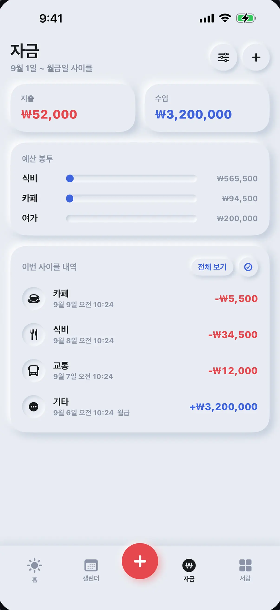
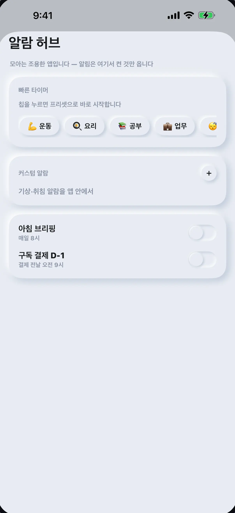

A life-management app bringing schedules and tasks, money and subscriptions, routines and daily tools together. Check the day on the Today screen and go straight to the tool you need.
Who it's for
People who want to manage their schedule, spending and routines in one place instead of across several apps
The problem we solved
With events in a calendar, spending in a budgeting app, and alarms and subscriptions in yet another app, it is hard to see the day at a glance. Schedules, tasks and personal records need to sit in one flow.
Our scope
Built the iOS and Android apps and prepared the store submissions.
Key features
- 01
Today screen
Today's tasks, routines, schedule, remaining budget and upcoming payments on one screen.
- 02
Calendar
Each date shows events alongside spending and income. Tap a date to see all of that day's records.
- 03
Money and subscriptions
Record spending and income, budget envelopes and recurring subscriptions, in multiple currencies.
- 04
Routines and alarms
Set recurring tasks as routines and start them right away with a quick timer in the alarm hub.
- 05
Widgets and shortcuts
The iOS app supports Home Screen widgets, a share extension and App Shortcuts.
- 06
Multilingual
The app is available in Korean, English and Vietnamese.
See the screens


If you want software to solve similar work, start by telling us where things stand.
Discuss your project